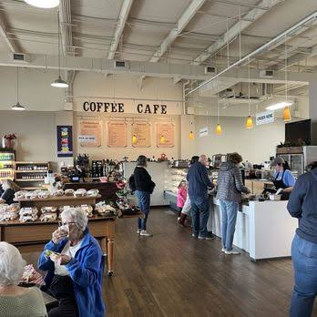

Deep River Brewing Company
A local gathering place in downtown Clayton known for its craft beverages and relaxed atmosphere. It's a spot to experience part of Clayton's local food and drink scene.
Your guide to local places, good food, and small-town charm.
From casual family meals to a relaxing coffee break, Clayton has a variety of local places to grab a bite. Explore some dining options and discover your next favorite spot.
A local gathering place in downtown Clayton known for its craft beverages and relaxed atmosphere. It's a spot to experience part of Clayton's local food and drink scene.
A downtown restaurant offering steakhouse favorites in a comfortable setting. A nice option for a sit-down meal or a special evening out.
A casual downtown spot where visitors can enjoy food and drinks while experiencing the local atmosphere.

A local coffee stop for anyone looking to slow down, enjoy a cup of coffee, and take a break while exploring Clayton.
After enjoying a meal, discover more of what the community has to offer.
Explore Things to Do